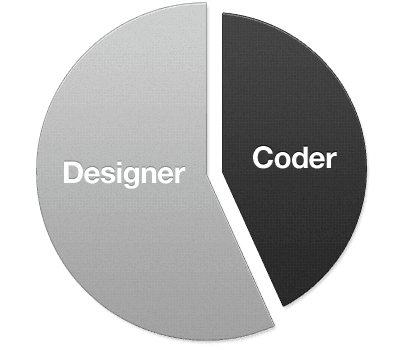

about.
I'm a UX designer based in Rhode Island, focused on simplifying complex systems and creating clear, usable digital experiences.
I started my career working with HTML in the late 1990s, which naturally led me into interface design and front-end development, and I've spent the years since drawn more toward solving user problems than simply implementing solutions.
Part designer
UI Design
UX Strategy
Interaction Design
Design Systems

Part coder
HTML
CSS
Tailwind
JavaScript
Random facts
Cooking
Boating
Skiing
Exploring restaurants
Films
Understanding why something should work a certain way became just as important as how it was built. That path shaped how I work today: I approach design with a strong systems mindset, balancing user needs, business goals, and technical realities, and I often act as a bridge between design and engineering to help teams move forward with clarity.
At FM Global, I helped establish and evolve a shared design system that gave teams a more consistent, accessible, and efficient way to build products. Now at Fidelity Investments, I focus on designing intuitive experiences for complex financial products and internal tools.
Outside of work, I enjoy cooking, staying active, being outdoors, and spending time with family.